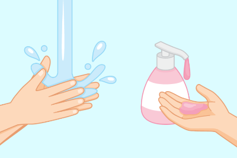
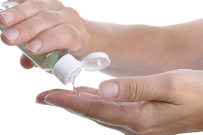
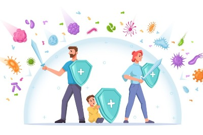
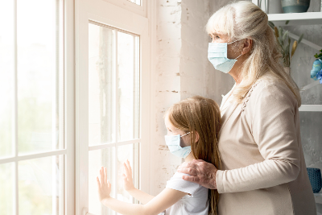

Quiz Ariane Cunha Silvano

Questão 1
A higienização das mãos com sabonete ou alcool é eficaz?
Não, o vírus é mais resistente que isso.
Limpar com papel ja é o suficiente.
Sim, ja é o suficiente sempre que tiver oportunidade.
Enviar Resposta
Questão 2
Quando não há ninguém por perto pode se colocar a máscara abaixo do nariz?
Sim, pois nos ajuda a respirar melhor.
Não, pois inutiliza a máscara.
Se não houver ninguem, posso deixar no bolso.
Enviar Resposta
Questão 3
Qual país teve melhor resultado em evitar mortes por milhão por contaminação de Covid-19?
Índia
Rússia
Nova Zelàndia
Enviar Resposta
Questão 4
Ingerir alcool pode ajudar a matar o vírus SARS-CoV-2?
Com certeza! O vírus morre em contato com alcool.
Não existe nenhuma confirmação científica que sustente essa tese.
Dependendo da dosagem pode ajudar.
Enviar Resposta

Questão 5
Duas pessoas ou mais podem compartilhar alcool gel?
Nunca! Pode ser contagioso.
Na verdade não, mas as vezes pode-se compartilhar.
Sim, qualquer um deve ter acesso a esse recurso.
Enviar Resposta

Questão 6
A imunidade do indivíduo influencia no grau que a contaminação pode atingir?
Independente da imunidade apenas idosos são afetados.
A imunidade não é um fator importante na reação do corpo ao contato com o vírus
Sim, a imunidade é determinante para a o contato com o vírus!
Enviar Resposta

Questão 7
Quanto tempo se deve ficar em isolamento após um soposto com o virús para detecta-lo com segurança?
4 dias
7 dias
14 dias
Enviar Resposta
Questão 8
Quais alguns dos sintomas da covid-19?
Manchas no corpo e dor nas pernas
Febre e dor de cabeça
bolhas no pé e nas mãos
Enviar Resposta
Questão 9
De quais animais foram sugeridos a origem do virus SARS-CoV-2?
Pangolin e morcego
Morcego e cachorro
Cachorro e tatu
Enviar Resposta
Questão 10
O SARS-CoV-2 é um :
Vírus
Bactéria
Micróbio
Enviar Resposta
Obrigado por responder a pesquisa!
Seu score de segurança é: